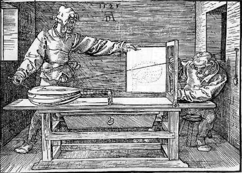

Publié en Juillet 2006, le Traité de lutherie explique l’évolution des procédés de mesures et de tracés utilisés par les luthiers depuis la Renaissance.

De Vitruve à Marin Mersenne on a affirmé que les instruments de musique devaient être construits suivant les règles de la musique. Mais les violes, guitares ou violons de nos musées ne semblaient porter aucune trace significative de ce principe simple.
Pour élucider ce paradoxe, François Denis, luthier installé à Angers, mène une véritable enquête qui nous emmène aux sources théoriques de la facture instrumentale.
Dans cet ouvrage de 256 pages richement illustré, l’auteur explique que les proportions des instruments de musique se rapportent à une définition archaïque de la notion de mesure. Dès lors, à la manière de l’architecture de la Renaissance, les dimensions des formes s’apparentent aux intervalles de notre écriture musicale plutôt qu’aux divisions pourtant plus familières de nos règles graduées. La démonstration de ce principe passe par le décryptage d’un plan de luth énigmatique datant du milieu du XV° siècle.
Le Traité de lutherie apporte un éclairage inédit sur les modes de pensée des anciens artisans. Délaissant notre représentation moderne de la forme, François Denis redonne aux luthiers les clés d’une codification de la forme qui fut à l’origine de la conception des instruments mythiques de la lutherie italienne.
Au-delà de ces aspects historiques, cet ouvrage délivre de nombreuses informations inédites sur les techniques de tracés à la règle et au compas jalousement gardées par les artisans. Il constitue en cela un véritable outil de travail pour ceux qui souhaitent acquérir une connaissance approfondie des formes les plus emblématiques de la lutherie comme des modes de pensée qui les ont générés.